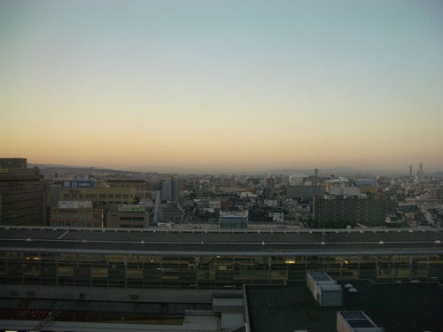
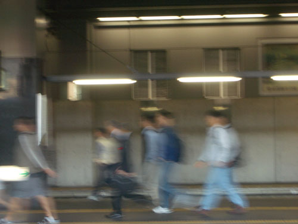
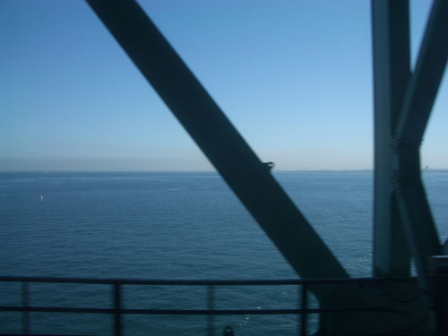
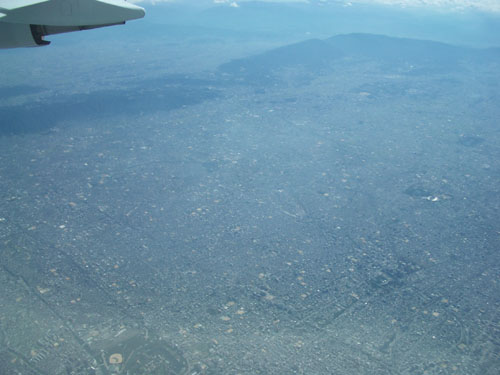
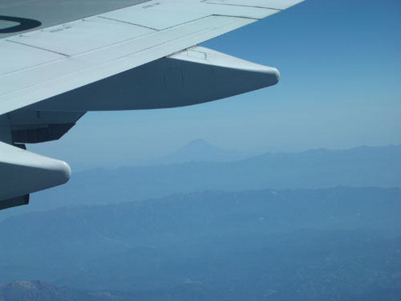
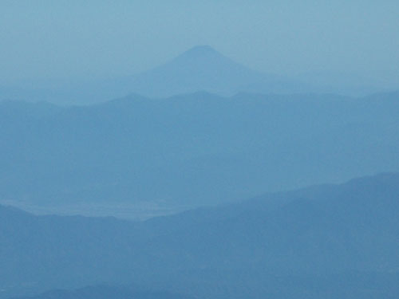
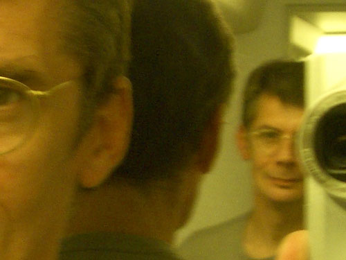
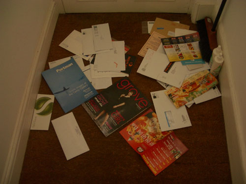

| < | > |
| Mata ne | [2004-10-31 16:11] |
 With two alarm clocks and a wake up call we weren't likely to miss the train, in fact we were early. Early enough to see the tail end of the previous airport express leaving the platform. Well, never mind, we could hang about and watch all the blurry eyed sleepy heads rush to work.  It may have been an express but it certainly wasn't in any hurry. Heading for the airport to go home is at one and the same time a relief and a disappointment. The endless urban sprawl of Osaka seemed impenetrable and faraway already. And then in a long slow arc we were suddenly on the bridge that takes you out to the airport.  We were back where we had started from. Back in the world of passports, security and queues. Back in the world of seat belts, and aisle seat or window seat. João chatting up the stewardess in the hopes of an emergency exit row, which we got. Back in the world of the unbelievable I'm-in-a-big-metal-box-in-the-sky view.  Suddenly there it was, the hide and seek mountain.  And there's Yuichi in his little white van twisting through the blue haze on an errand for his boss, Mr Ota.  By the time we rise above the clouds and the great clean vista of eternity stretches out in all directions forever, I find myself thinking how incredibly small an individual consciousness really is – almost nothing, no matter how densely packed with pleasures and worries it seems when one is living it. But that kind of feeling doesn't last long. Like the eye of a snail it retracts and immerses in tiny video screen adventures. In this case, love and death among trainee Hiroshima coast guard divers – the Sea Monkeys – and (movie two) the gentle heroics of a girl dying of cancer. I cried twice. On and on we droned. It was daylight all the way, but most people had the blinds down and were asleep. Just like at work, going to the toilet can be a form of entertainment.  Eventually at 4 pm London time we arrived home and answered the unspoken question – no, we hadn't been burgled.  |
|
|
|